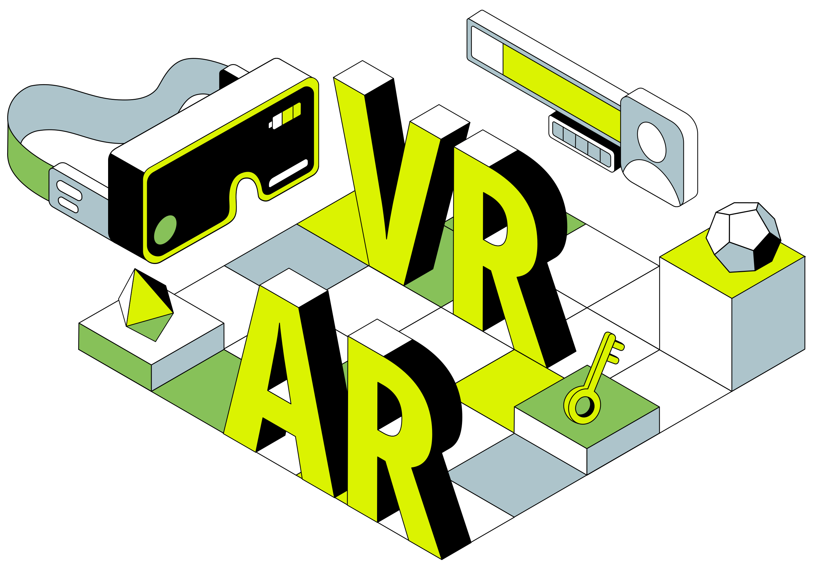

본 실감미디어 콘텐츠 기획 및 제작 실습을 위해 필요한 도구와 작업 흐름에 대해 소개하고, 프로젝트 진행을 위한 기본 개념을 이해합니다.
실감 미디어에 있어서 제작 도구의 중요성

실감 미디어 제작에서 적절한 도구를 선택하고 이를 효과적으로 학습하는 것은 프로젝트의 성공에 필수적입니다. 올바른 도구 선택은 작업 효율성을 높이고, 창의적인 아이디어를 실현하는 데 중요한 역할을 합니다. 또한, 도구의 기능과 사용법을 충분히 이해하고 숙달하면, 제작 과정에서 발생할 수 있는 문제를 신속하게 해결할 수 있으며, 최종 결과물의 품질을 극대화할 수 있습니다.
실감 미디어 제작에 사용되는 주요 도구
실감 미디어 콘텐츠를 제작하는 데 사용되는 주요 도구로는 엔진 플랫폼, 3D 모델링 툴, 사운드 편집 툴 등이 있습니다. 이러한 도구들은 각각의 역할과 특성에 따라 프로젝트의 목적과 요구사항에 맞게 선택되어야 합니다. 요 근래에는 도구의 다양성과 기능이 확대되면서, 사용자들은 다양한 도구를 활용하여 창의적인 콘텐츠를 제작할 수 있게 되었습니다. 용인미래기술학교에서는 다루지 않았지만 다양한 도구들이 있으니, 자신에게 맞는 도구를 선택하여 활용하는 것이 중요합니다.
Unity는 모바일, PC, 콘솔, VR/AR 등 다양한 플랫폼을 지원하며, 시각적 에디터와 C# 기반의 스크립트 작성으로 초보자도 쉽게 접근할 수 있고, 방대한 커뮤니티와 Asset Store를 통해 개발 시간을 단축할 수 있으며, 특히 3D 게임과 VR/AR 콘텐츠, 교육, 시뮬레이션, 아키텍처 비주얼라이제이션 등 다양한 분야에서 강력한 그래픽 엔진과 실시간 렌더링 기능을 활용해 사실적인 콘텐츠 제작에 유용한 플랫폼입니다.
장점: 다양한 플랫폼 지원, 쉬운 학습 곡선, 방대한 커뮤니티와 에셋 스토어, 강력한 그래픽 엔진과 실시간 렌더링 기능을 제공합니다.
단점: 무료 버전의 경우 유료 기능이 제한적이며, 최적화 및 성능 향상에 시간이 소요될 수 있습니다.
활용 분야: 3D 게임, VR/AR 콘텐츠, 교육, 시뮬레이션, 아키텍처 비주얼라이제이션 등 다양한 분야에서 활용 가능합니다.
3D 모델의 재질(Material), 텍스처(Texture), 애니메이션(Animation) 등의 기본 개념 이해.
3D 모델의 렌더링, 라이팅, 쉐이딩 등의 기본 개념 이해.
3D 모델의 리깅(Rigging)과 애니메이션 제작 방법 습득.
3D 모델의 최적화 및 성능 향상 방법 습득.
VR/AR Development:
Unity에서 VR/AR 콘텐츠를 제작하는 방법 습득.
VR/AR 디바이스와의 연동, 터치 입력, 헤드 트래킹 등의 기능 이해.
VR/AR 콘텐츠의 최적화 및 성능 향상 방법 습득.
VR/AR 콘텐츠의 배포 및 테스트 방법 습득.
Audio & Sound Design:
Unity에서 오디오 파일(.wav, .mp3 등)을 사용하는 방법 습득.
오디오 소스(Audio Source)와 오디오 리스너(Audio Listener)의 역할 이해.
BGM, 효과음, 음성 등의 오디오 자원을 관리하는 방법 습득.
오디오 믹싱, 이펙트, 공간 음향 등의 기본 개념 이해.
오디오 리소스의 최적화 및 성능 향상 방법 습득.
Unreal Engine
Unreal Engine은 AAA급 게임 개발을 위한 강력한 그래픽 엔진으로, 높은 품질의 그래픽과 물리 시뮬레이션, VR/AR 지원, 시네마틱 렌더링 등의 기능을 제공합니다. 또한 무료로 사용할 수 있는 라이선스와 다양한 레퍼런스 자료, 커뮤니티 지원을 통해 개발자들이 쉽게 접근할 수 있습니다.
장점: 높은 품질의 그래픽과 물리 시뮬레이션, VR/AR 지원 등 강력한 기능을 제공합니다.
단점: 학습 곡선이 높을 수 있으며, 초기 설정과 최적화에 시간이 소요될 수 있습니다.
활용 분야: AAA급 게임 개발, VR/AR 콘텐츠 제작, 시뮬레이션, 교육 등 다양한 분야에서 활용 가능합니다.
Viewport, Outliner, Properties, Timeline, Node Editor 등의 역할 이해.
Object, Mesh, Modifier, Material, Texture 등의 개념 이해.
Modeling:
Blender에서 기본 도구를 활용한 3D 모델링 방법 습득.
기하 도구, 변형 도구, 배열 도구, 레티코 로테이트 등의 기본 기능 이해.
3D 모델의 재질(Material), 텍스처(Texture), UV 매핑, 노말맵 등의 기본 개념 이해.
3D 모델의 리깅(Rigging)과 애니메이션 제작 방법 습득.
3D 모델의 파티클 시스템, 역학 시뮬레이션, 엣지 플로우 등의 기능 이해.
Texturing & Shading:
Blender의 텍스처링, 쉐이딩, 머티리얼 작업 방법 습득.
UV 매핑, 노말맵, 디스플레이스먼트 맵, 라이팅 등의 기본 개념 이해.
PBR(Physically Based Rendering) 쉐이딩, 레이어드 텍스처, 노이즈 텍스처 등의 기능 이해.
텍스처의 최적화 및 성능 향상 방법 습득.
Animation & Rigging:
Blender에서 애니메이션과 리깅 작업 방법 습득.
키 프레임 애니메이션, 모션 캡처, 리깅, 스킨닝 등의 기본 개념 이해.
애니메이션 커브, 액션 에디터, NLA 에디터, 모션 패스 등의 기능 이해.
애니메이션의 최적화 및 성능 향상 방법 습득.
Rendering:
Blender의 Cycles, Eevee 등의 렌더링 엔진 사용 방법 습득.
렌더링 설정, 카메라, 조명, 렌더링 레이어, 렌더링 패스 등의 기본 개념 이해.
렌더링의 최적화 및 성능 향상 방법 습득.
VFX & Game Development:
Blender에서 파티클 시뮬레이션, 역학 시뮬레이션, 엣지 플로우 등의 VFX 기능 습득.
Blender와 게임 엔진(Unity, Unreal Engine)의 연동 방법 습득.
게임 콘텐츠 제작을 위한 Blender의 기능 습득.
Blender 기능
3D 모델링: 다양한 도구와 기능을 활용하여 3D 모델링을 진행할 수 있습니다.
애니메이션: 간단한 키 프레임 애니메이션부터 복잡한 리깅과 모션 캡처 애니메이션을 제작할 수 있습니다.
렌더링: Cycles, Eevee 등의 렌더링 엔진을 활용하여 고품질의 렌더링을 생성할 수 있습니다.
VFX: 파티클 시뮬레이션, 역학 시뮬레이션 등 다양한 VFX 효과를 제작할 수 있습니다.
게임 개발: 게임 엔진과 연동하여 게임 콘텐츠를 제작할 수 있습니다.
사운드 편집 툴:
Adobe Audition
Adobe Audition은 Adobe Creative Cloud의 일부로 제공되는 오디오 편집 소프트웨어로, 다양한 오디오 편집 기능과 효과, 믹싱, 마스터링 기능을 제공합니다. 음악, 팟캐스트, 라디오 방송, 영상 등 다양한 분야에서 활용되며, 다양한 오디오 포맷을 지원하고, 다양한 플러그인을 통해 확장 가능합니다.
장점: 다양한 오디오 편집 기능과 효과를 제공하며, 다양한 오디오 포맷을 지원합니다.
단점: 복잡한 기능을 활용하기 위해서는 학습이 필요할 수 있습니다.
활용 분야: 음악 제작, 팟캐스트 제작, 라디오 방송, 영상 편집 등 다양한 분야에서 활용 가능합니다.
Multitrack, Waveform, Mixer, Effects, Media Browser 등의 역할 이해.
오디오 파일, 트랙, 클립, 믹스 등의 개념 이해.
Audio Editing:
Adobe Audition에서 오디오 파일을 편집하는 방법 습득.
클립, 트랙, 믹스, 페이드 인/아웃, 크로스페이드 등의 기본 기능 이해.
오디오 편집 도구, 효과, 필터, EQ, 컴프레서, 리버브 등의 기능 이해.
오디오 믹싱, 마스터링, 노이즈 제거, 볼륨 조절, 팬 등의 기능 이해.
Audio Effects:
Adobe Audition의 오디오 효과, 필터, EQ, 리버브, 딜레이 등의 기능 습득.
오디오 이펙트, 노이즈 제거, 볼륨 조절, 팬 등의 기능 이해.
오디오 이펙트의 적용, 조절, 레이어드 효과, 믹싱 등의 기능 이해.
게임 엔진 연동:
Adobe Audition과 게임 엔진(Unity, Unreal Engine)의 연동 방법 습득.
게임 콘텐츠 제작을 위한 오디오 편집 방법 습득.
게임 오디오의 최적화 및 성능 향상 방법 습득.
온라인 플랫폼 활용:
온라인 협업 도구의 중요성
실감 미디어 콘텐츠를 개발하는데 있어 팀원 간의 원활한 소통과 협업은 매우 중요합니다. 특히, 프로젝트의 규모가 커지거나, 팀원들이 지역적으로 분산되어 있는 경우, 온라인 협업 도구를 활용하여 효율적인 프로젝트 관리와 작업 흐름을 구축하는 것이 필수적입니다. 이러한 온라인 협업 도구는 채팅, 일정 관리, 파일 공유, 업무 관리 등 다양한 기능을 제공하며, 팀원 간의 소통과 협업을 원활하게 할 수 있습니다.
Slack
Slack은 팀원 간의 소통과 협업을 위한 온라인 메신저 및 업무 관리 도구로, 채널(Channel)을 통해 특정 주제나 프로젝트별로 대화를 나눌 수 있으며, 파일 공유, 일정 관리, 업무 통합 등 다양한 기능을 제공합니다. 특히, 다양한 플러그인과 연동 기능을 통해 다른 협업 도구와 연동하여 효율적인 업무 환경을 구축할 수 있습니다.
장점: 채널별 대화, 파일 공유, 일정 관리, 플러그인 연동 등 다양한 기능을 제공합니다.
단점: 초기 설정 및 사용법을 익히는 데 시간이 소요될 수 있습니다.
활용 분야: 팀 프로젝트, 과제 관리, 회사 업무, 교육 등 다양한 분야에서 활용 가능합니다.
프로필 설정: 이름, 직책 또는 학과, 프로필 사진 등을 등록하여 다른 학생 및 교수님과 소통을 원활히 할 수 있도록 설정해 주세요.
2. Slack 기본 기능 설명
채널(Channel) 사용법
채널의 역할: 채널은 Slack 내에서 특정 주제나 목적에 따라 대화가 이루어지는 공간입니다. 수업이나 과제, 팀 프로젝트별로 채널을 나누어 효율적으로 사용할 수 있습니다.
공지사항 채널: 교수님이나 관리자들이 중요한 공지를 게시하는 곳입니다. 공지사항 채널은 알림을 놓치지 않도록 고정(Pin)해 두세요.
팀별 채널: 과제나 프로젝트별 팀을 위한 전용 채널이 생성될 수 있습니다. 팀별 대화, 일정 공유, 자료 제출 등이 이루어집니다.
채널 탐색 및 참여하기: Slack 워크스페이스 좌측 메뉴에서 '채널 찾기'를 클릭해 원하는 채널을 찾아 참여할 수 있습니다.
메시지 보내기
기본 메시지: 각 채널에 일반 메시지를 남기거나 개인 메시지를 통해 필요한 내용을 공유할 수 있습니다.
@멘션: 특정 사람에게 알림을 보내고 싶을 때 @사용자이름으로 멘션하세요. 전체 알림을 주고 싶다면 @here 또는 @channel을 사용합니다.
이모티콘 반응(Emoji Reactions): 메시지에 간단한 이모티콘을 통해 감정이나 의견을 표현할 수 있습니다. 👍, ✅ 같은 이모티콘을 이용해 간단히 피드백을 주고받는 것도 추천합니다.
스레드(Thread) 사용하기: 채널이 혼잡해지지 않도록 특정 메시지에 댓글을 다는 방식으로 대화할 수 있습니다. 스레드를 통해 질문이나 의견에 체계적으로 답변할 수 있습니다.
파일 공유
과제 제출 및 자료 공유: 파일 공유는 Slack의 중요한 기능 중 하나입니다. 과제 파일, 프로젝트 자료를 채널에 업로드하여 쉽게 공유할 수 있습니다.
Google Drive, Dropbox 연동: Slack은 클라우드 서비스와 연동이 가능하므로, Google Drive 또는 Dropbox에 있는 파일을 Slack에서 바로 공유할 수 있습니다.
Tip: Slack 활용 팁
검색 기능: 채널 내에서 특정 주제나 자료를 찾기 위해 Slack의 강력한 검색 기능을 활용하세요. Ctrl+F 또는 / 키를 누르면 빠르게 검색 창이 열립니다.
Slack 앱 연동: 다양한 앱을 연동하여 Slack에서 수업 관련 퀴즈나 투표를 진행해볼 수도 있습니다.
알림 설정: 모든 채널의 알림을 받으면 혼란스러울 수 있으니, 중요 채널만 알림을 설정하거나 필요에 따라 알림을 끄는 것을 추천합니다.
Notion
Notion은 협업 및 업무 관리를 위한 온라인 도구로, 다양한 기능을 제공하며, 팀원 간의 협업, 일정 관리, 문서 작성, 프로젝트 관리 등을 효율적으로 수행할 수 있습니다. 노트, 템플릿, 데이터베이스, 일정 등 다양한 기능을 제공하며, 사용자의 필요에 따라 다양한 형태로 활용할 수 있습니다.
장점: 다양한 기능과 템플릿을 제공하며, 사용자의 필요에 따라 다양한 형태로 활용할 수 있습니다.
블록: 노션의 핵심 단위로, 텍스트, 체크리스트, 이미지, 동영상 등을 포함하며, 페이지에 자유롭게 추가 가능합니다. 블록을 통해 문서를 자유롭게 편집할 수 있으며, 다양한 유형을 조합해 페이지를 구성할 수 있습니다.
페이지: 블록의 모음으로 이해할 수 있으며, 프로젝트별로 페이지를 만들어 폴더처럼 사용 가능합니다. 페이지 간 링크 연결과 서브페이지 생성도 지원해 작업을 체계적으로 관리할 수 있습니다.
데이터베이스
노션의 강력한 기능 중 하나인 데이터베이스는 표, 캘린더, 보드, 갤러리 형태 등으로 구성이 가능합니다. 예를 들어, 테이블로 시작한 데이터베이스는 필요에 따라 보드나 갤러리 형태로 변경할 수 있습니다. 데이터베이스 내 항목은 개별 페이지로 열리며, 다양한 속성(Property)을 추가해 구조화된 정보 관리가 가능합니다.
템플릿 활용
노션은 회의록, 프로젝트 계획서 등 다양한 템플릿을 제공합니다. 템플릿을 사용하면 초기 설정 없이 바로 필요한 형태의 문서를 작성할 수 있어 시간과 노력을 절약할 수 있습니다. 맞춤형 템플릿 생성도 가능하여, 재사용할 수 있는 작업 흐름을 구축할 수 있습니다.
협업 기능
노션은 팀원 간 댓글, 태그 기능을 통해 실시간으로 소통할 수 있으며, 문서의 공동 편집 및 수정 권한 설정을 지원합니다. 공유된 페이지에서 직접 피드백을 주고받아 협업 효율을 높일 수 있습니다.
임베드 및 외부 파일 삽입
외부 파일(PDF, Google Docs 등)을 임베드하여 문서에서 바로 내용을 확인할 수 있습니다. 임베드는 페이지에서 필요 시 외부 콘텐츠를 쉽게 접근할 수 있도록 돕는 기능입니다.
Jira
Jira는 소프트웨어 개발 및 프로젝트 관리를 위한 도구로, 이슈 트래킹, 업무 관리, 프로젝트 관리, 일정 관리 등 다양한 기능을 제공합니다. Agile 방법론을 지원하며, 스크럼(Scrum), 칸반(Kanban) 등의 프로젝트 관리 방법을 지원하며, 팀원 간의 협업과 업무 흐름을 효율적으로 관리할 수 있습니다.
장점: Agile 방법론을 지원하며, 다양한 기능을 제공합니다. 특히, 소프트웨어 개발 및 프로젝트 관리에 적합한 도구입니다.
단점: 초기 설정이 어렵고, 사용법을 익히는 데 시간이 소요될 수 있습니다. 또한, 모든 팀원들이 사용해야 효과적으로 활용할 수 있습니다. Jira를 사용하는 팀원들이 많지 않다면, 다른 협업 도구를 활용하는 것을 고려해야 합니다.
프로젝트 생성: Jira 대시보드에서 새 프로젝트를 생성하고, 프로젝트 유형(스크럼, 칸반)을 선택합니다.
프로젝트 설정: 프로젝트의 이름, 설명, 팀원, 이슈 유형, 이슈 워크플로우 등을 설정합니다.
이슈 관리
이슈 생성: 프로젝트에 이슈를 생성하고, 이슈의 제목, 설명, 우선순위, 담당자, 마감일 등을 설정합니다.
이슈 할당: 이슈를 담당자에게 할당하고, 이슈의 상태를 변경하여 업무 진행 상황을 확인합니다.
이슈 필터링: 프로젝트의 이슈를 필터링하여 특정 조건에 맞는 이슈를 검색하고, 보고서를 생성합니다.
이슈 추적: 이슈의 상태, 우선순위, 마감일 등을 추적하여 프로젝트의 진행 상황을 확인하고, 문제점을 신속하게 해결합니다.
스크럼 및 칸반 보드
스크럼 보드: 스프린트, 백로그, 이슈 등을 관리하는 스크럼 보드를 생성하고, 스프린트 계획, 스프린트 회고 등을 수행합니다.
칸반 보드: 업무 흐름을 시각적으로 관리하는 칸반 보드를 생성하고, 업무 상태, 우선순위 등을 관리합니다.
일정 관리
일정 설정: 프로젝트의 일정을 설정하고, 마일스톤, 스프린트, 이슈의 마감일 등을 관리합니다.
일정 추적: 프로젝트의 일정을 추적하여 지연된 이슈, 완료된 이슈 등을 확인하고, 일정을 조정합니다.
업무 흐름 관리
업무 흐름 설정: 프로젝트의 업무 흐름을 설정하고, 이슈의 상태, 전이 조건, 이슈 유형 등을 관리합니다.
업무 흐름 실행: 프로젝트의 업무 흐름을 실행하여 이슈의 상태를 변경하고, 업무 진행 상황을 확인합니다.
프로젝트 작업 흐름 이해
🤔 우리 수업에서는 어떻게 활용할 수 있을까?
본 용인미래기술학교 실감미디어 콘텐츠 기획 및 제작 실습 수업에서 본 모델을 활용할 수 있을지 생각해보겠습니다.
개발 방법론 소개
개발 방법론이란 실감미디어 콘텐츠 개발 프로젝트를 계획하고, 실행하며, 완료하기 위한 절차와 방법을 의미합니다. 실감미디어 콘텐츠 개발 방법론은 프로젝트의 성격과 목적, 팀 구성원의 역량, 개발 환경 등을 고려하여 선택되어야 하며, 프로젝트의 성패를 좌우하는 중요한 요소 중 하나입니다.
일반적인 프로젝트 진행 단계
아이디어 발상 ➔ 기획 ➔ 디자인 ➔ 개발 ➔ 테스트 ➔ 배포
아이디어 발상
브레인스토밍: 팀원들과 자유롭게 아이디어를 공유하고 기록하는 세션을 통해 다양한 아이디어를 도출합니다.
시장 조사: 현재 시장 동향과 경쟁 제품을 분석하여 프로젝트의 차별화 요소를 찾습니다.
트렌드 분석: 최신 기술 및 디자인 트렌드를 파악하여 프로젝트에 반영할 수 있는 요소를 식별합니다.
기획
프로젝트 목표 설정, 타겟 사용자 정의, 기능 및 콘텐츠 기획
디자인
3D 모델링, UI/UX 디자인, 사운드 디자인 등 시각 및 청각 요소 제작
개발
엔진을 활용한 프로그래밍, 기능 구현, 인터랙션 설계
테스트
기능 테스트, 버그 수정, 성능 최적화
배포
최종 빌드 생성, 플랫폼별 배포, 사용자 피드백 수집
워터폴 방법론
워터폴 방법론은 소프트웨어 개발 방법론 중 하나로, 개발 과정을 단계적으로 진행하는 방식입니다. 요구사항 분석, 설계, 구현, 테스트, 유지보수 등의 단계를 순차적으로 진행하며, 한 단계가 끝나야 다음 단계로 진행하는 선형적인 방법론입니다.
장점: 개발 과정을 예측 가능하게 하고, 문서화가 잘 되어 있어 이해하기 쉽습니다.
단점: 요구사항 변경에 취약하며, 초기에 결정된 사항을 변경하기 어렵습니다.
활용 분야: 요구사항이 명확하고 변동이 적은 프로젝트에 적합합니다.
워터폴 방법론 단계
요구사항 분석(Requirements Analysis)
고객의 요구사항을 수집, 분석하고 문서화합니다.
요구사항 명세서를 작성하고 검증합니다.
프로젝트의 범위와 목표를 명확히 정의합니다.
시스템 설계(System Design)
시스템의 전체적인 구조와 아키텍처를 설계합니다.
하위 시스템 간의 상호작용을 정의합니다.
시스템의 주요 기능과 데이터 흐름을 설계합니다.
구현(Implementation)
설계된 내용을 바탕으로 실제 코딩을 수행합니다.
코딩 표준과 가이드라인을 준수하며 개발합니다.
모듈별로 구현하고 단위 테스트를 진행합니다.
통합 및 테스트(Integration and Testing)
구현된 모듈들을 통합하여 전체 시스템을 구성합니다.
통합된 시스템에 대해 다양한 테스트를 수행합니다.
오류를 발견하고 수정하는 과정을 거칩니다.
배포(Deployment)
테스트가 완료된 시스템을 실제 운영 환경에 배포합니다.
사용자 교육을 실시하고 필요한 문서를 제공합니다.
유지보수(Maintenance)
시스템 운영 중 발생하는 오류를 수정합니다.
필요에 따라 새로운 기능을 추가하거나 성능을 개선합니다.
지속적인 모니터링과 업데이트를 수행합니다.
워터폴 방법론 장단점
장점
개발 과정을 예측 가능하게 하고, 문서화가 잘 되어 있어 이해하기 쉽습니다.
각 단계가 확실하게 구분되어 있어 개발자들이 업무를 명확하게 이해하고 수행할 수 있습니다.
프로젝트의 일정과 예산을 미리 예측할 수 있어, 프로젝트 관리가 용이합니다.
단점
요구사항 변경에 취약하며, 초기에 결정된 사항을 변경하기 어렵습니다.
개발 과정이 순차적으로 진행되기 때문에, 중간에 발생한 문제를 해결하기 어렵습니다.
프로젝트 초기에 요구사항을 명확히 정의하지 못하면, 프로젝트의 성패가 좌우될 수 있습니다.
단점 극복 방법
요구사항 변경에 유연하게 대응할 수 있는 방법을 찾아야 합니다.
프로젝트 초기에 요구사항을 명확히 정의하고, 변경에 대비할 수 있는 방안을 마련해야 합니다.
프로젝트의 일정과 예산을 유연하게 조정할 수 있는 방법을 찾아야 합니다.
V자 모델 방법론
V자 모델 방법론은 워터폴 방법론의 확장된 형태로, 각 단계의 검증을 강조하는 방법론입니다. 요구사항 분석, 설계, 구현, 테스트, 유지보수 등의 단계를 순차적으로 진행하며, 각 단계의 검증을 통해 개발 과정의 품질을 보장합니다.
V자 모델의 각 개발 단계는 대응되는 테스트 단계와 연결됩니다. 예를 들어, 요구사항 분석 단계는 인수 테스트와, 시스템 설계는 시스템 테스트와, 아키텍처 설계는 통합 테스트와, 모듈 설계는 단위 테스트와 각각 대응됩니다.
이 모델은 각 개발 단계마다 검증 작업을 수행하여 오류를 조기에 발견하고 수정할 수 있다는 장점이 있습니다. 그러나 유연성이 부족하고 변경에 대응하기 어렵다는 단점도 있습니다.
장점: 개발 과정의 품질을 보장하며, 초기에 발생한 결함을 빠르게 발견할 수 있습니다.
단점: 개발 과정이 길어지고, 비용이 증가할 수 있습니다.
활용 분야: 안정적인 시스템을 개발해야 하는 프로젝트에 적합합니다.
왼쪽 하향 단계 (개발 단계)
요구사항 분석
고객의 요구사항을 수집, 분석하고 문서화합니다.
요구사항 명세서를 작성하고 검증합니다.
프로젝트의 범위와 목표를 명확히 정의합니다.
시스템 설계
시스템의 전체적인 구조와 아키텍처를 설계합니다.
하위 시스템 간의 상호작용을 정의하고 인터페이스를 설계합니다.
시스템의 주요 기능과 데이터 흐름을 설계합니다.
아키텍처 설계
시스템의 주요 구성 요소와 그들 간의 관계를 정의합니다.
시스템의 기술적 프레임워크를 설계하고 선택합니다.
성능, 보안, 확장성 등을 고려한 아키텍처를 설계합니다.
모듈 설계
개별 모듈의 상세 설계를 수행합니다.
각 모듈의 기능과 인터페이스를 정의하고 문서화합니다.
모듈 간의 의존성과 통신 방식을 설계합니다.
구현
설계된 내용을 바탕으로 실제 코딩을 수행합니다.
코딩 표준과 가이드라인을 준수하며 개발합니다.
버전 관리 시스템을 활용하여 코드를 관리합니다.
오른쪽 상향 단계 (검증 및 테스트 단계)
단위 테스트
개별 모듈이 정상적으로 동작하는지 테스트합니다.
자동화된 단위 테스트를 작성하고 실행합니다.
코드 커버리지를 분석하고 개선합니다.
통합 테스트
모듈들을 통합하여 시스템이 정상적으로 동작하는지 테스트합니다.
모듈 간 인터페이스와 데이터 흐름을 검증합니다.
통합 과정에서 발생하는 오류를 식별하고 수정합니다.
시스템 테스트
전체 시스템이 요구사항을 만족하는지 테스트합니다.
성능, 보안, 사용성 등 비기능적 요구사항도 테스트합니다.
시스템의 안정성과 신뢰성을 검증합니다.
인수 테스트
고객이 직접 시스템을 테스트하고 요구사항 충족 여부를 확인합니다.
사용자 시나리오를 기반으로 실제 환경에서 테스트합니다.
고객의 피드백을 수집하고 필요한 경우 수정합니다.
추가 단계
10. 운영 및 유지보수
- 시스템을 실제 환경에 배포하고 운영합니다.
- 필요에 따라 오류를 수정하고 기능을 개선합니다.
- 시스템 성능을 모니터링하고 최적화합니다.
- 사용자 지원 및 교육을 제공합니다.
애자일 방법론
애자일 방법론은 소프트웨어 개발 방법론 중 하나로, 요구사항이 빈번하게 변하는 프로젝트에 적합한 방법론입니다. 스크럼, 익스트림 프로그래밍(XP), 칸반 등의 방법론이 있으며, 짧은 주기로 개발을 반복하고, 요구사항 변경에 유연하게 대응합니다.
장점: 요구사항 변경에 유연하게 대응할 수 있으며, 고객과의 소통을 강화할 수 있습니다.
단점: 초기에 요구사항을 명확히 정의하기 어려울 수 있으며, 고객과의 소통이 부족할 경우 문제가 발생할 수 있습니다.
활용 분야: 요구사항이 빈번하게 변하는 프로젝트에 적합합니다.
애자일 방법론의 주요 특징
스크럼(Scrum)
스프린트(Sprint): 2주에서 1개월 정도의 짧은 개발 주기로, 개발 목표를 달성하는 데 필요한 작업을 계획하고 실행하는 단위입니다.
스크럼 마스터(Scrum Master): 스크럼 팀이 스크럼 프로세스를 올바르게 준수하고, 장애 요소를 제거하며, 팀의 생산성을 최대화하는 역할을 수행합니다.
제품 백로그(Product Backlog): 제품에 대한 요구사항 목록으로, 제품의 기능, 기능 개선, 버그 수정 등을 포함합니다.
스프린트 백로그(Sprint Backlog): 스프린트 동안 완료해야 할 작업 목록으로, 제품 백로그에서 선택된 작업을 포함합니다.
데일리 스크럼(Daily Scrum): 매일 동일한 시간과 장소에서 진행되는 짧은 회의로, 팀원들이 어제 한 일, 오늘 할 일, 장애 요소 등을 공유합니다.
스프린트 회고(Sprint Retrospective): 스프린트 종료 후 진행되는 회의로, 스프린트 동안의 성과와 개선할 점을 도출하고, 다음 스프린트에 반영할 수 있도록 계획합니다.
익스트림 프로그래밍(XP)
페어 프로그래밍(Pair Programming): 두 명의 개발자가 하나의 컴퓨터에서 작업하여, 코드 품질을 높이고, 지식 공유를 촉진하는 방법입니다.
한명의 개발자는 코딩을 하고, 다른 한명은 코드 리뷰 및 테스트를 수행합니다. 한명은 드라이버(Driver), 다른 한명은 나비게이터(Navigator) 역할을 수행합니다. 일정 주기로 역할을 교체하여 페어 프로그래밍을 수행합니다.
역할을 교대 하여 페어 프로그래밍을 수행할 수 있습니다.
지속적인 아이디어 교환과 문제 해결 방법 논의가 중요한 활동입니다.
오류를 빠르게 발견하고 수정할 수 있습니다. 그리고 코드 품질을 높일 수 있습니다.
지식을 공유하고, 팀원 간의 협업을 강화할 수 있습니다. 뿐만 아니라 집중력을 높이고 더 나은 코드를 작성할 수 있습니다.
테스트 주도 개발(Test-Driven Development, TDD): 테스트 케이스를 먼저 작성하고, 테스트를 통과하는 코드를 작성하는 방법으로, 코드 품질을 높이고, 버그를 줄일 수 있습니다.
일반적으로 Red-Green-Refactor라는 사이클을 따릅니다. 먼저 실패하는 테스트 케이스를 작성하고, 테스트를 통과하는 코드를 작성합니다. 그리고 리팩토링을 통해 코드의 중복을 제거하고, 가독성을 높입니다.
테스트 케이스를 먼저 작성하고, 테스트를 통과하는 코드를 작성합니다. 이를 통해 코드의 품질을 높이고, 버그를 줄일 수 있습니다.
안정성을 강화하고 코드의 유지보수성을 높일 수 있습니다. 또한, 코드의 품질을 높일 수 있습니다.
지속적 통합(Continuous Integration): 코드 변경 사항을 자동으로 빌드하고, 테스트하는 방법으로, 통합 오류를 미리 발견하여 개발 생산성을 향상시킵니다.
코드 변경 사항을 자동으로 빌드하고, 테스트하는 방법입니다. 이를 통해 통합 오류를 미리 발견하고, 개발 생산성을 향상시킬 수 있습니다.
코드 변경사항의 빈번한 통합과 자동화된 빌드 및 테스트를 통해 품질을 높일 수 있습니다. 빠른 피드백을 통해 오류를 빠르게 수정할 수 있습니다. 또한 버전 관리 시스템을 활용하는 경우가 많고 중앙 저장소를 통해 코드 변경 사항을 관리합니다.
작은 릴리즈(Small Releases): 짧은 주기로 작은 기능을 출시하여, 고객의 피드백을 빠르게 수렴하고, 제품의 품질을 개선하는 방법입니다.
짧은 주기로 작은 기능을 출시하여, 고객의 피드백을 빠르게 수렴하고, 제품의 품질을 개선하는 방법입니다.
작은 기능을 출시하고, 고객의 피드백을 수렴하여 제품의 품질을 개선할 수 있습니다. 또한, 고객의 요구사항을 빠르게 반영할 수 있습니다. 하지만 이러한 방법론을 적용하기 위해서는 고객과의 소통이 중요합니다.
칸반(Kanban)
칸반 보드(Kanban Board): 할 일, 진행 중, 완료 등의 칸반 보드를 활용하여, 작업의 상태를 시각적으로 관리하고, 작업량을 제한하는 방법입니다.
한계 WIP(Limit WIP): 작업량을 제한하여, 과도한 작업을 방지하고, 작업의 집중도를 높이는 방법입니다.
풀 시스템 최적화(Whole System Optimization): 전체 시스템의 최적화를 목표로 하여, 팀 전체의 생산성을 향상시키는 방법입니다.
애자일 방법론 적용 사례
프로젝트 관리 도구
지라(Jira): 애자일 방법론을 지원하는 프로젝트 관리 도구로, 스크럼, 칸반 등의 방법론을 적용하여 프로젝트를 관리할 수 있습니다.
태스크월리(Taskworld): 업무 관리, 프로젝트 관리, 업무 협업 등을 지원하는 클라우드 기반의 협업 도구입니다.
트렐로(Trello): 칸반 보드 방식의 업무 관리 도구로, 할 일, 진행 중, 완료 등의 칸반 보드를 활용하여 업무를 관리할 수 있습니다.
협업 도구
슬랙(Slack): 업무용 메신저 및 협업 도구로, 채널, 멘션, 파일 공유 등의 기능을 제공하여 팀 협업을 효율적으로 할 수 있습니다.
노션(Notion): 협업 및 문서 작성 도구로, 페이지, 블록, 템플릿 등의 기능을 제공하여 프로젝트 관리와 문서 작성을 효율적으로 할 수 있습니다.
컨플루언스(Confluence): 팀 협업 및 문서 작성 도구로, 웹 기반의 협업 플랫폼을 제공하여 프로젝트 문서를 작성하고 공유할 수 있습니다.
개발 도구
깃허브(GitHub): 버전 관리 및 협업 도구로, 깃(Git)을 기반으로 한 코드 관리, 이슈 트래킹, 협업 기능을 제공합니다.
젠킨스(Jenkins): 지속적 통합 도구로, 코드 빌드, 테스트, 배포 등의 작업을 자동화하여 개발 생산성을 향상시킬 수 있습니다.
아이디어 발상 및 개념 개발
브레인스토밍 기법: 마인드 맵, 스토리보드 작성 등
마인드 맵(Mind Map)
아이디어를 시각적으로 정리하고 구조화하는 방법
중심 주제를 중심으로 주요 아이디어와 세부 아이디어를 분류하여 작성
아이디어 간의 연결고리를 표시하여 아이디어의 흐름을 이해하기 쉽게 함
스토리보드(Storyboard)
콘텐츠의 시각적인 구조와 흐름을 설계하는 방법
각 장면의 구성, 캐릭터의 동작, 카메라 앵글 등을 그림과 설명으로 표현
콘텐츠의 전체적인 흐름을 파악하고, 디자인 및 개발 단계에서 활용
사용자 분석: 타겟 사용자 정의와 페르소나 개발
타겟 사용자(Target User)
콘텐츠를 사용할 주요 대상으로, 연령, 성별, 직업, 취향 등을 고려하여 정의
타겟 사용자의 요구사항과 욕구를 파악하여 콘텐츠를 디자인하고 개발
타겟 사용자의 특성을 고려하여 콘텐츠의 특징과 기능을 결정
타겟 사용자의 피드백을 수집하여 콘텐츠를 개선하고 발전시킴
페르소나(Persona)
타겟 사용자를 구체적으로 표현한 가상의 인물로, 이름, 나이, 직업, 취미, 성격, 목표, 욕구 등을 포함
페르소나를 통해 타겟 사용자의 특성을 이해하고, 콘텐츠를 디자인하고 개발
페르소나를 기반으로 콘텐츠의 특징과 기능을 결정하고, 사용자 경험을 개선
스토리텔링
스토리텔링(Storytelling)
콘텐츠를 이야기로 전달하는 방법. 캐릭터, 배경, 문제, 해결책, 전개 등을 포함하여 콘텐츠의 흐름을 설계.
사용자의 감정과 호응을 유도하고, 콘텐츠의 메시지를 전달하는데 효과적.
스토리텔링을 통해 콘텐츠의 구조와 흐름을 파악하고, 사용자의 관심을 끌 수 있음.
SCAMPER 기법 활용
SCAMPER는 아이디어를 확장하고 발전시키는 창의적 사고 기법으로, 다음과 같은 7가지 요소로 구성됩니다.
Substitute(대체): 대체할 수 있는 요소가 있는지 고려
Combine(결합): 요소를 결합하여 새로운 아이디어 도출
Adapt(응용): 다른 문제나 분야에서 사용된 아이디어를 응용
Modify(수정): 아이디어를 수정하거나 변형하여 새로운 아이디어 생성
Put to another use(다른 용도로 사용): 다른 용도로 사용할 수 있는 방법 고려
Eliminate(제거): 불필요한 요소를 제거하여 간소화
Reverse(역전): 순서를 역전하거나 반대로 생각하여 새로운 아이디어 도출
델파이 기법 활용
델파이 기법(Delphi Method)
전문가의 의견을 종합하여 의사결정을 내리는 방법으로, 여러 전문가들이 익명으로 의견을 제시하고, 중재자가 종합하여 의견을 도출하는 방법
델파이 기법을 통해 다양한 전문가의 의견을 수렴하고, 효과적인 의사결정을 내릴 수 있음
프로젝트의 방향성을 확립하고, 의사결정을 지원 가능
다양한 전문가의 의견을 종합하여 효과적인 의사결정을 내릴 수 있음
라운드 별로 의견을 수정하고, 중재자가 종합하여 최종 의견을 도출
델파이 기법의 장단점
장점: 전문가의 의견을 종합하여 효과적인 의사결정을 내릴 수 있음
단점: 의견이 분산될 수 있고, 중재자의 주관이 개입될 수 있음
2차시: 아이디어 발상 및 개념 개발
🔹세션 목표
창의적인 아이디어 발상 기법 습득
사용자 중심의 개념 개발 방법 이해
프로젝트의 콘셉트와 방향성 확립
🔹준비 사항
팀별 또는 개인별 아이디어 노트
참고할 만한 사례 연구 자료
필기 도구 또는 디지털 메모 앱
아이디어 발상 기법
브레인스토밍 세션 진행
자유로운 아이디어 공유와 기록 방법
마인드 맵 작성
아이디어 간의 연관성 파악 및 시각화는 복잡한 아이디어를 구조화하고, 각 아이디어가 어떻게 연결되는지 명확하게 이해할 수 있도록 도와줍니다. 이를 통해 팀원 간의 의사소통을 원활하게 하고, 프로젝트의 방향성을 명확히 할 수 있습니다.
장점: 아이디어를 시각적으로 표현하여 이해하기 쉽고, 창의적인 아이디어 발상을 돕습니다.
단점: 복잡한 아이디어를 표현하기에 한계가 있을 수 있으며, 아이디어의 질을 보장하기 어렵습니다.
활용 분야: 아이디어 발상, 프로젝트 기획, 회의 등 다양한 분야에서 활용 가능합니다.
적용 방법: 중심 주제를 중심으로 아이디어를 뻗어나가는 방식으로 작성하며, 각 아이디어 간의 연결고리를 표시합니다.
마인드 맵 작성 단계
중심 주제 설정: 마인드 맵의 중심에 프로젝트의 주요 주제를 배치합니다.
주요 아이디어 도출: 중심 주제에서 뻗어나가는 주요 아이디어를 작성합니다.
세부 아이디어 추가: 각 주요 아이디어에서 더 세부적인 아이디어를 뻗어나갑니다.
연결고리 표시: 아이디어 간의 관계를 선으로 연결하여 시각적으로 표현합니다.
검토 및 수정: 작성된 마인드 맵을 팀원들과 함께 검토하고 필요한 부분을 수정합니다.
마인드 맵 작성 도구
종이와 펜: 간단하고 빠르게 작성할 수 있습니다.
디지털 도구: XMind, MindMeister, Miro 등 다양한 소프트웨어를 활용하여 디지털 마인드 맵을 작성할 수 있습니다.
SCAMPER 기법 활용
SCAMPER는 창의적인 문제 해결과 아이디어 발상을 돕기 위한 기법으로, 다음과 같은 7가지 요소로 구성됩니다.
장점: 간단하고 직관적인 방법으로, 다양한 관점에서 문제를 바라볼 수 있습니다.
단점: 구체적인 문제 해결에는 한계가 있을 수 있으며, 아이디어의 질을 보장하기 어렵습니다.
활용 분야: 디지털 미디어, 실감 미디어 등 다양한 분야에서 활용 가능합니다.
적용 방법: 각 단계별로 질문을 던져 아이디어를 도출하고, 이를 통해 새로운 아이디어를 발전시킬 수 있습니다.
주의사항: 자유롭게 아이디어를 발산하는 것이 중요하며, 비판을 삼가하고 모든 아이디어를 수용하는 것이 좋습니다.
Substitute (대체하기)
어떤 요소를 다른 것으로 바꾸어 새로운 아이디어를 도출합니다. 재료, 사람, 프로세스, 장소 등을 대체하여 다양한 변화를 모색합니다.
적용 질문
어떤 부분을 다른 것으로 바꿀 수 있을까?
사용되는 재료나 기술을 대체하면 어떻게 될까?
역할이나 기능을 다른 사람이나 사물로 교체하면?
예시
기술 대체: 기존의 2D 그래픽 대신 3D 그래픽을 도입하여 몰입감을 높입니다.
장소 대체: 오프라인 회의 대신 온라인 화상 회의를 통해 시간과 비용을 절감합니다.
콘텐츠 대체: 기존의 텍스트 기반 콘텐츠 대신 실감미디어를 활용하여 사용자 경험을 향상시킵니다.
플랫폼 대체: 기존의 PC 게임 대신 메타버스 플랫폼을 통해 새로운 게임 경험을 제공합니다.
기술 대체: 기존의 2D 애니메이션 대신 VR/AR 기술을 도입하여 몰입감을 높입니다.
Combine (결합하기)
서로 다른 두 개 이상의 요소를 결합하여 새로운 아이디어나 제품을 만듭니다. 다양한 기능이나 개념을 융합하여 시너지 효과를 창출합니다.
적용 질문
어떤 아이디어나 기능을 결합하면 더 나은 결과를 얻을 수 있을까?
다른 팀이나 프로젝트와 협업할 수 있는 부분은?
여러 기술을 함께 사용하면 어떤 새로운 가능성이 열릴까?
Adapt (응용하기)
다른 분야나 상황에서 성공한 아이디어를 현재 문제나 프로젝트에 맞게 적용합니다. 기존의 해결책을 변형하여 새로운 용도로 활용합니다.
적용 질문
다른 산업의 성공 사례를 우리 프로젝트에 적용할 수 있을까?
자연이나 동물의 특성을 모방하여 디자인에 반영할 수 있을까?
유사한 문제를 어떻게 해결했는지 참고할 수 있을까?
Modify (수정하기)
크기, 색상, 모양 등의 요소의 특성을 변경하여 새로운 아이디어를 창출합니다. 확대하거나 축소하고, 형태를 변형하여 독특한 결과물을 만듭니다.
적용 질문
어떤 부분을 확대하거나 축소할 수 있을까?
색상이나 질감을 변경하면 어떤 효과가 있을까?
기능이나 속도를 조절하여 개선할 수 있을까?
Put to another use (다른 용도로 사용하기)
기존의 목적과는 다른 용도로 요소를 활용하여 새로운 기능이나 아이디어를 만듭니다.
적용 질문
이 요소를 다른 용도로 사용할 수 있을까?
부수적인 기능을 주요 기능으로 바꿀 수 있을까?
폐기물이나 부산물을 활용할 방법이 있을까?
Eliminate (제거하기)
불필요한 요소나 기능을 제거하여 단순화하고, 핵심 가치를 부각시킵니다.
적용 질문
어떤 부분을 제거하면 더 나은 결과를 얻을 수 있을까?
복잡한 기능을 단순화할 수 있을까?
사용자에게 혼란을 주는 요소는 무엇인가?
Reverse (역전시키기)
순서, 방향, 역할 등을 반대로 바꾸어 새로운 시각으로 접근합니다. 문제나 아이디어를 뒤집어서 생각해봅니다.
적용 질문
프로세스의 순서를 바꾸면 어떤 일이 일어날까?
역할을 바꾸면 새로운 아이디어가 나올까?
반대 상황을 가정하면 어떤 결과가 나올까?
델파이 기법 활용
델파이 기법은 전문가의 의견을 종합하여 의사결정을 내리는 방법으로, 여러 전문가들이 익명으로 의견을 제시하고, 중재자가 종합하여 의견을 도출하는 방법입니다.
델파이 기법의 장단점
장점: 전문가의 의견을 종합하여 효과적인 의사결정을 내릴 수 있음
단점: 의견이 분산될 수 있고, 중재자의 주관이 개입될 수 있음
델파이 기법의 적용
문제 정의: 의사결정에 필요한 문제를 명확히 정의하고, 목표를 설정합니다.
전문가 선정: 해당 분야의 전문가들을 선정하고, 익명성을 보장합니다.
의견 수렴: 전문가들에게 의견을 요청하고, 중재자가 종합하여 의견을 도출합니다.
의견 종합: 중재자가 전문가들의 의견을 종합하여 최종 결론을 도출합니다.
결과 공유: 최종 결론을 전문가들과 공유하고, 필요한 조치를 취합니다.
사용자 분석과 페르소나 개발
1.타겟 사용자 정의
타겟 사용자를 정의하는 것은 페르소나 개발의 첫 단계입니다. 이는 연령, 성별, 관심사 등의 세부적인 프로파일링을 포함합니다.
👵 연령별 프로파일링
연령 그룹 설정
10대 (13-19세)
20대 (20-29세)
30대 (30-39세)
40대 (40-49세)
50대 이상 (50세 이상)
제품/서비스 특성에 따라 더 세분화 가능
데이터 수집 방법
웹사이트/앱 사용 통계 분석 (예: Google Analytics)
설문조사 및 심층 인터뷰 (IDI) 실시
소셜 미디어 트렌드 분석
경쟁사 분석
사용자 테스트 진행
패턴 분석
웹/앱 사용 빈도 및 시간대 분석
주요 사용 기능 및 콘텐츠 파악
구매 패턴 및 선호도 분석
특정 이벤트/캠페인에 대한 반응 분석
기술 활용도 및 선호도 분석
사용자 피드백 및 불만사항 분석
👩❤️👨성별별 프로파일링
성별별 프로파일링은 다양한 산업에서 중요한 역할을 할 수 있으며, 성별에 따른 행동 패턴과 선호도 차이를 이해하는 것은 마케팅, 제품 개발 및 고객 서비스의 개선에 도움이 될 수 있습니다. 다음은 이 작업을 수행하기 위한 몇 가지 접근 방식입니다.
성별에 따른 행동 패턴 및 선호도 차이 분석
성 고정관념을 피하고 다양성을 고려한 접근
성별에 따른 제품/서비스 사용 목적 및 동기 파악
행동 패턴 및 선호도 차이 분석
데이터 수집: 온라인 설문조사, 소셜 미디어 분석, 구매 기록 등을 통해 성별에 따른 행동 데이터를 수집합니다.
행동 분석: 각 성별 그룹이 주로 어떤 활동에 참여하는지, 쇼핑 습관이나 소비 경향은 어떠한지를 분석합니다.
선호도 조사: 다양한 제품이나 서비스에서 각 성별의 선호도를 조사하여 어떤 요소들이 중요한지 파악합니다.
성 고정관념 피하기
편견 인식 및 방지: 데이터 해석 시 기존의 성 고정관념이나 편견을 인식하고 이를 피하기 위한 노력을 기울입니다.
다양성 고려: 다양한 문화적 배경과 개인적 경험이 반영될 수 있도록 표본 다양성을 확보합니다.
개인 맞춤 접근: 개개인의 차이를 강조하여 성별 이분법적인 접근 대신 개개인의 특성을 반영한 맞춤형 전략을 개발합니다.
사용 목적 및 동기 파악
심층 인터뷰 및 포커스 그룹: 특정 제품이나 서비스를 사용하는 이유와 동기를 심층적으로 이해하기 위해 인터뷰와 포커스 그룹을 시행합니다.
사용 시나리오 분석: 제품/서비스가 실제로 어떻게 사용되는지를 시나리오 기반으로 분석하여 다양한 사용 목적을 파악합니다.
동기 부여 요인 연구: 각 성별이 특정 제품이나 서비스를 선택하는 주요 동기 부여 요인을 식별하고 이를 바탕으로 마케팅 전략을 조정합니다.
 Unreal Engine
Unreal Engine Blender
Blender Slack
Slack Notion
Notion Jira
Jira